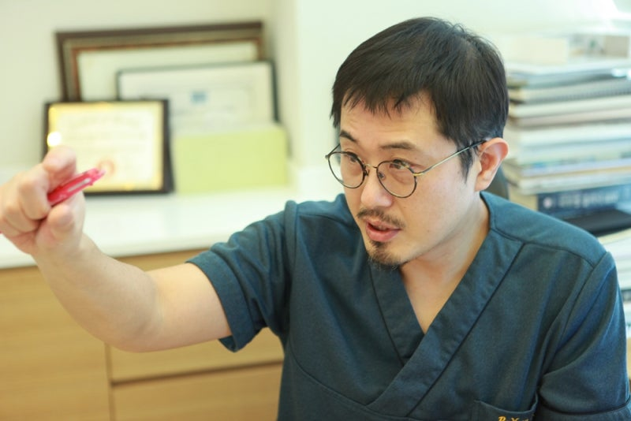

울쎄라와 써마지 FLX, 이름은 익숙한데 정작 나에게 맞는 쪽은 어느 쪽일까요?
두 시술 모두 처진 피부와 탄력 저하를 관리하는 대표적인 리프팅이지만, 에너지의 종류도 작용하는 피부층도 다릅니다. 효과와 부작용, 통증, 그리고 수면마취가 꼭 필요한지까지 상담 전에 많이 궁금해하시는 네 가지를 정리했습니다.

핵심 차이는 ‘어느 층에, 어떤 에너지로 작용하느냐’입니다.
고주파(RF) 에너지로 진피층 콜라겐 밀도를 높여 잔주름, 피부 탄력, 모공 등 전반적인 피부결 개선을 기대할 수 있습니다.
고강도 집속 초음파(HIFU)로 진피층과 SMAS층에 에너지를 전달해 처진 피부와 턱선, 이중턱 개선에 도움이 됩니다.
| 울쎄라 | 써마지 FLX | |
|---|---|---|
| 에너지 | 고강도 집속 초음파(HIFU) | 고주파(RF) |
| 주로 작용하는 층 | 진피층 + SMAS층(깊은 층) | 진피층 |
| 이런 고민이라면 | 턱선·볼 처짐, 이중턱 | 잔주름, 탄력 저하, 모공, 피부결 |
처짐이 두드러진다면 울쎄라, 잔주름과 피부결이 고민이라면 써마지 FLX가 먼저 거론되는 경우가 많습니다. 두 가지가 함께 고민이라면 깊은 층과 표면을 동시에 관리하는 울써마지(울쎄라 + 써마지)를 고려할 수 있습니다.
다만 피부 두께와 처짐 정도, 고민 부위에 따라 적합한 시술과 샷 수는 달라지므로 직접 상담을 통해 정하시는 것이 가장 정확합니다.
비침습 리프팅이라 일상 복귀가 빠른 편이지만, 시술 후 일시적인 붉어짐, 붓기, 멍, 통증, 감각 저하 등이 나타날 수 있습니다. 대부분 시간이 지나며 가라앉지만 개인차가 있습니다.
드물게는 울쎄라에서 볼패임, 써마지에서 열에 의한 피부 손상이 보고되기도 합니다. 이런 위험을 줄이려면 아래 세 가지가 중요합니다.
팁은 에너지를 전달하는 핵심 소모품입니다. 정품 팁인지, 사용 횟수가 지켜지는지 확인하세요.
피부 두께와 지방층 두께에 맞춰 깊이와 에너지를 설계해야 합니다. 같은 샷 수라도 설계에 따라 결과가 달라집니다.
상담부터 시술까지 같은 의료진이 직접 확인하는지 살펴보세요.
울쎄라는 피부 안쪽을 찌르는 듯한 신경통이 대표적인 통증입니다. 써마지 FLX는 쿨링 시스템이 함께 작동해 열감 위주로 느끼는 분이 많으며, 일반적으로 울쎄라보다는 통증이 덜하다고 알려져 있습니다.
통증은 시술 부위, 샷 수, 개인의 통증 민감도에 따라 크게 달라집니다. 턱선 위주의 비교적 적은 샷은 마취 연고만으로 진행하기도 하지만, 얼굴 전체처럼 샷 수가 많아질수록 통증 관리를 함께 계획하는 것이 좋습니다.
꼭 해야 하는 것은 아닙니다. 통증을 얼마나 견딜 수 있는지, 시술 범위가 어디까지인지에 따라 선택하시면 됩니다.
적은 샷 수나 통증에 덜 민감한 경우 기본적으로 사용합니다.
수면 없이 긴장과 통증을 줄이고 싶을 때 고려할 수 있습니다.
샷 수가 많거나 통증이 걱정될 때 선택합니다. 이때는 안전장비를 갖춘 수술실에서 진행하는지, 시술 후 안전하게 회복할 공간이 있는지 꼭 확인하세요.
리연케이의원은 수면마취를 수술실에서만 진행하고, 시술 후에는 1인실에서 충분히 회복하신 뒤 귀가하실 수 있도록 안내합니다.
우열의 문제가 아니라 목적의 차이입니다. 울쎄라는 깊은 층의 처짐 개선에, 써마지 FLX는 진피층의 잔주름과 탄력, 피부결 개선에 초점이 있습니다. 고민에 맞춰 선택하거나 함께 진행할 수 있습니다.
일반적으로 울쎄라 쪽이 더 아프다고 느끼는 분이 많습니다. 다만 개인차가 크고 샷 수와 부위에 따라 달라집니다.
대부분 가능하지만 붉어짐, 붓기, 멍 등이 일시적으로 나타날 수 있습니다. 중요한 일정이 있다면 상담 시 미리 알려 주세요.
가능합니다. 마취 연고와 에어녹스(스마일 가스)로 수면 없이 진행할 수 있고, 통증이 걱정되는 경우 수면마취를 선택하실 수 있습니다.
좋은 리프팅은 유행하는 시술이 아니라, 내 얼굴에 맞는 시술에서 시작됩니다.
울쎄라와 써마지 FLX 중 고민이 되신다면, 피부 상태를 직접 확인한 뒤 맞는 시술과 샷 수, 통증 관리 방법을 안내해 드립니다. 압구정 리연케이의원에서 편하게 상담받아 보세요.
※ 시술 효과와 유지 기간은 개인의 피부 상태에 따라 다를 수 있습니다. 시술 후 일시적인 붉어짐, 붓기, 멍, 통증, 감각 저하 등이 나타날 수 있으므로 반드시 의료진과 충분히 상담하신 뒤 결정하시기 바랍니다.